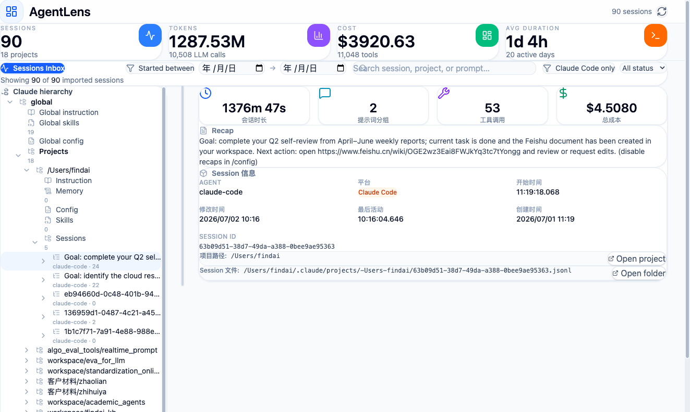
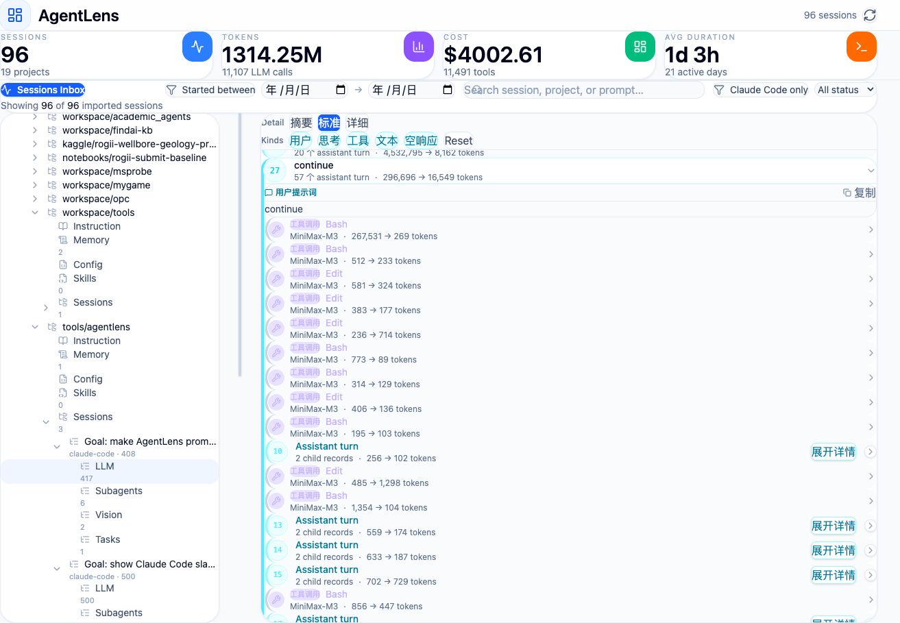

Find the session
Search across projects and sessions, filter by date, and use automatic recaps to identify the work you need.

Local-first · Claude Code + Codex
The open-source AI agent log viewer for finding, replaying, and understanding every Claude Code and Codex CLI session on your machine.
One searchable history
AgentLens reads the JSONL session history your coding agents already create. It normalizes both formats into a consistent timeline without sending prompts, source paths, or tool output to a hosted service.
Search across projects and sessions, filter by date, and use automatic recaps to identify the work you need.
Inspect user prompts, assistant responses, slash commands, tool calls, subagents, tasks, and vision references in order.
Review token volume, model activity, tool usage, project totals, and recorded cost data from a local analytics dashboard.
Forensic session replay
Conversation threads remain connected to the commands, files, subagents, and structured control-plane events that produced the result.

Private by architecture
The public website contains product information only. The AgentLens application runs locally and indexes local session files into a SQLite database you control.
Run locally
git clone https://github.com/QJ-Chen/agentlen.git
cd agentlen
pip install -e .Common questions
AgentLens is a local-first AI agent log viewer. It turns Claude Code and Codex session files into a searchable project hierarchy, analytics overview, and detailed session replay.
Yes. It reads Claude Code logs from ~/.claude/projects/ and also reads Codex rollout logs from ~/.codex/sessions/. AgentLens adds unified search, recaps, tool inspection, subagent views, and usage analytics.
No. Collection, normalization, storage, API access, and dashboard rendering run locally. The default SQLite database is stored at ~/.agentlens/agentlens.db.
AgentLens is a Python and React application designed for macOS, Linux, and Windows. The current collectors support Claude Code and OpenAI Codex CLI session formats.
Yes. Session replay connects prompts and assistant turns with tool inputs and outputs, slash commands, subagent activity, task status, vision references, token totals, and source JSONL provenance.
Agent history should be usable